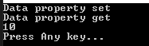
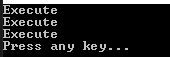

[C#] 53. Reflection機能を使い方 - Propertyとevent
こんにちは。明月です。
この投稿はC#でReflection機能を使い方 - Propertyとeventに関する説明です。
以前の投稿までC#のReflectionのClassとMethod、Variable(変数)に関して説明しました。
link - [C#] 50. Reflection機能を使い方 - Class
link - [C#] 51. Reflection機能を使い方 - Method
link - [C#] 52. Reflection機能を使い方 - Variable
Reflectionはクラスの構成要素に関して動的にデータを取得及び呼び出す方法です。
JavaにはClassの構成要素が関数とメンバー変数しかないですが、C#の場合はプロパティやイベントなどの特殊機能(?)をもっている関数があります。
プロパティは関数機能と変数の機能を合わせた要素だし、イベントは関数を複数で重畳して呼び出す機能です。
link - [C#] 21. C#のプロパティ(Property)
link - [C#] 25. イベント(event)キーワードを使い方
まず、プロパティのReflectionは関数のReflectionと似ています。
using System;
using System.Reflection;
namespace Example
{
// 例クラス
class Node
{
// メンバー変数
private int data;
// プロパティ
public int Data
{
// set関数
set
{
// コンソール出力
Console.WriteLine("Data property set");
// メンバー変数に値を入力
this.data = value;
}
// set関数
get
{
// コンソール出力
Console.WriteLine("Data property get");
// メンバー変数の値をリターン
return this.data;
}
}
}
class Program
{
// 実行関数
static void Main(string[] args)
{
// インスタンス生成
var node = new Node();
// Nodeクラスのtypeを取得
Type type = typeof(Node);
// プロパティのDataのReflection情報を取得
PropertyInfo property = type.GetProperty("Data");
// Dataプロパティのset関数を呼び出す、値の10を入力
property.SetValue(node, 10);
// Dataプロパティのget関数を呼び出して値を取得
var value = property.GetValue(node);
// コンソール出力
Console.WriteLine(value);
// 任意のキーを押してください
Console.WriteLine("Press Any key...");
Console.ReadLine();
}
}
}

上の例はNodeクラスのDataプロパティのset関数とget関数を呼び出すReflectionです。
プロパティがOOPの規約のためにget、set関数なので、関数のReflectionと差異がありません。プロパティもprivateを設定することができるし、staticで設定することができますが、普通はpublicで設定します。でも、publicではなくても関数のReflectionみたいにBindingFlags.Public | BindingFlags.NonPublic | BindingFlags.Staticのオプションで取得することができます。
eventの場合は関数を重畳して一括で呼び出す方法です。
using System;
using System.Reflection;
namespace Example
{
// 例クラス
class Node
{
// デリゲート
public event EventHandler ExecuteEvent;
}
class Program
{
// 実行関数
static void Main(string[] args)
{
// インスタンス生成
Node node = new Node();
// Nodeクラスのtypeを取得
Type type = typeof(Node);
// ExecuteEventのEvent reflectionを取得
EventInfo eventInfo = type.GetEvent("ExecuteEvent");
// イベントに追加する関数
MethodInfo methodInfo = typeof(Program).GetMethod("Print_Event", BindingFlags.NonPublic | BindingFlags.Static);
// 関数をDelegateで変換
Delegate d = Delegate.CreateDelegate(eventInfo.EventHandlerType, null, methodInfo);
// イベント追加
eventInfo.AddEventHandler(node, d);
// イベント追加
eventInfo.AddEventHandler(node, d);
// イベント追加
eventInfo.AddEventHandler(node, d);
// ExecuteEventイベントに関する実行フィールドを取得
var backingField = typeof(Node).GetField("ExecuteEvent", BindingFlags.Instance | BindingFlags.NonPublic);
// nodeインスタンスからハンドラー取得
var handler = (EventHandler)backingField.GetValue(node);
// 実行
handler("Execute", new EventArgs());
// 任意のキーを押してください
Console.WriteLine("Press any key...");
Console.ReadLine();
}
// コンソール出力するイベント関数
static void Print_Event(object sender, EventArgs e)
{
// コンソール出力
Console.WriteLine(sender);
}
}
}

上の例ではGetEvent関数を通ってNodeクラスのeventを取得します。
イベントにはDelegateタイプでイベントを追加しますが、Delegate.CreateDelegateを通って関数をデリゲート(関数ポインター)タイプに変換しなければならないです。
そしてevent reflectionを通ってイベントを追加します。私の場合は3回に追加しました。
実はイベントはクラス内部で実行しなければならないです。でも、そうなるとReflection機能ではないでしょう。外部でeventを呼び出すためには実行Fieldデータを取得しなければならないです。この部分が面白いことはここではeventをメンバー変数タイプで作成しましたが、メンバー変数で認識します。
eventのアクセス修飾子がpublicですが、privateで認識します。その方法でFieldを取得してEventHandlerのデリーケートタイプで強制キャストしたら関数みたいに呼び出すができます。
ここまでC#でReflection機能を使い方 - Propertyとeventに関する説明でした。
ご不明なところや間違いところがあればコメントしてください。
- [C#] 60. ウィンドウフォーム(Window form)のイベント設定する方法2021/11/02 21:18:08
- [C#] 59. ウィンドウフォーム(Window form)にコントロール(Control)を使い方法2021/10/29 19:45:43
- [C#] 58. ウィンドウフォーム(Window form)を作成する方法、そしてウィンドウメッセージとキュー2021/10/27 20:35:44
- [C#] 57. コーティング規約2021/10/21 18:57:02
- [C#] 56. 値の初期化及び基本データ値(default)を設定する方法、そして原始データのnull処理、?と??の使い方2021/10/21 18:54:41
- [C#] 55.namespaceとusing、そしてpartialの使い方2021/10/21 18:51:39
- [C#] 54. Reflection機能を使い方 - Attribute2021/10/20 19:29:31
- [C#] 53. Reflection機能を使い方 - Propertyとevent2021/10/19 21:02:58
- [C#] 52. Reflection機能を使い方 - Variable2021/10/15 19:27:37
- [C#] 51. Reflection機能を使い方 - Method2021/10/14 18:34:21
- [C#] 50. Reflection機能を使い方 - Class2021/10/13 18:34:13
- [C#] 49. Operator(演算子)のオーバーロードを使い方2021/10/12 18:28:42
- [C#] 48. IEnumerableとIEnumerator、そしてyieldキーワード2021/10/11 19:49:33
- [C#] 47. Nugetを使い方(外部ライブラリ)とデータベース(MariaDB(Mysql))を使い方、そしてトランザクション(Transaction)2021/10/08 18:58:57
- [C#] 46. データベース(MSSQL)に接続する方法2021/10/07 18:39:58
- [Java] 59. Spring bootのJPAでEntityManagerを使い方2022/02/25 18:27:48
- [Java] 58. EclipseでSpring bootのJPAを設定する方法2022/02/23 18:11:10
- [Java] 57. EclipseでSpring bootを設定する方法2022/02/22 19:04:49
- [Python] Redisデータベースに接続して使い方2022/02/21 18:23:49
- [Java] Redisデータベースを接続して使い方(Jedisライブラリ)2022/02/16 18:13:17
- [C#] Redisのデータベースを接続して使い方2022/02/15 18:46:09
- [CentOS] Redisデータベースをインストールする方法とコマンドを使い方2022/02/14 18:33:07
- [Design pattern] 3-6. ステートパターン(State pattern)2021/11/17 20:04:47
- [Design pattern] 3-5. メメントパターン(Memento pattern)2021/11/16 20:01:36
- [Design pattern] 3-4. イテレータパターン(Iterator pattern)2021/11/15 19:31:28
- [CentOS] Linux環境(CentOS)でCassandra(NoSQL DB)をインストールする方法(DBeaverブラウザでNoSQL使い方)2021/11/12 17:33:58
- [Design pattern] 3-3. コマンドパターン(Command pattern)2021/11/05 17:01:42
- [Window] apache-tomcatでロードバランシング(Load balancing)する方法とセッションクラスタリング（セッション共有）2021/11/05 16:58:45
- [Window] Apacheでmod_jkとmod_proxyの差異、apacheでtomcatのwebsocketのプロキシフォーワードする方法2021/11/05 16:55:05
- [PHP] Apache環境の同じホスト中でPHPとJava(Servlet)を同時に起動、運用する方法2021/11/05 16:52:04